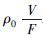

经典天体力学除了存在着第21节所讨论的困难之外，还存在着另一个基本困难。根据我的了解，天文学家希来哲(Seeliger)第一个对这个基本困难进行了详细的讨论。如果我们仔细地考虑一下这个问题： 对于宇宙，作为整体而言，我们应持何种看法；那么我们所想到的第一个回答一定是： 就空间(和时间)而言，宇宙是无限的。到处都存在着星体，因此，虽然就细微部分说来物质的密度变化很大，但平均说来是到处一样的。换言之，我们在宇宙空间中无论走得多么远，都会到处遇到稀薄的恒星群，这些恒星群的种类和密度差不多都是一样的。
这个看法与牛顿的理论是不一致的。牛顿理论要求宇宙应具有某种中心，处在这个中心的星群密度最大，从这个中心向外走，诸星的群密度逐渐减小，直到最后，在非常遥远处，成为一个无限的空虚区域。恒星宇宙应该是无限的空间海洋中的一个有限的岛屿 [1] 。
这个概念本身已不很令人满意。这种概念更加不能令人满意的是由于它导致了下述结果： 从恒星发出的光以及恒星系中的各个个别恒星不断奔向无限的空间，一去不返，而且永远不再与其他自然客体相互发生作用。这样的一个有限的物质宇宙将注定逐渐而系统地被削弱。
为了避免这种两难局面，希来哲对牛顿定律提出了一项修正，其中假定，对于很大的距离而言，两质量之间的吸引力比按照平方反比定律得出的结果减小得更加快些。这样，物质的平均密度就有可能处处一样，甚至到无限远处也是一样，而不会产生无限大的引力场。这样我们就摆脱了物质宇宙应该具有某种像中心之类的东西的这种讨厌的概念。当然，我们摆脱上述基本困难是付出了代价的，这就是对牛顿定律进行了修改并使之复杂化，而这种修改和复杂化既无经验根据亦无理论根据。我们能够设想出无数个可以实现同样目的的定律，而不能举出理由说明为什么其中一个定律比其他定律更为可取；因为这些定律中的任何一个，与牛顿定律相比，并没有建立在更为普遍的理论原则上。
[1] 证明 按照牛顿的理论，来自无限远处而终止于质量m 的“力线”的数目与质量m 成正比。如果平均说来质量密度ρ 0 在整个宇宙中是一个常数，则体积为V的球即包有平均质量ρ 0 V 。因此，穿过球面F 进入球内的力线数与ρ 0 V 成正比。对于单位球面积而言，进入球内的力线数就与

或ρ 0 R 成正比。因此，随着球半径R 的增长，球面上的场强最终就变为无限大，而这是不可能的。